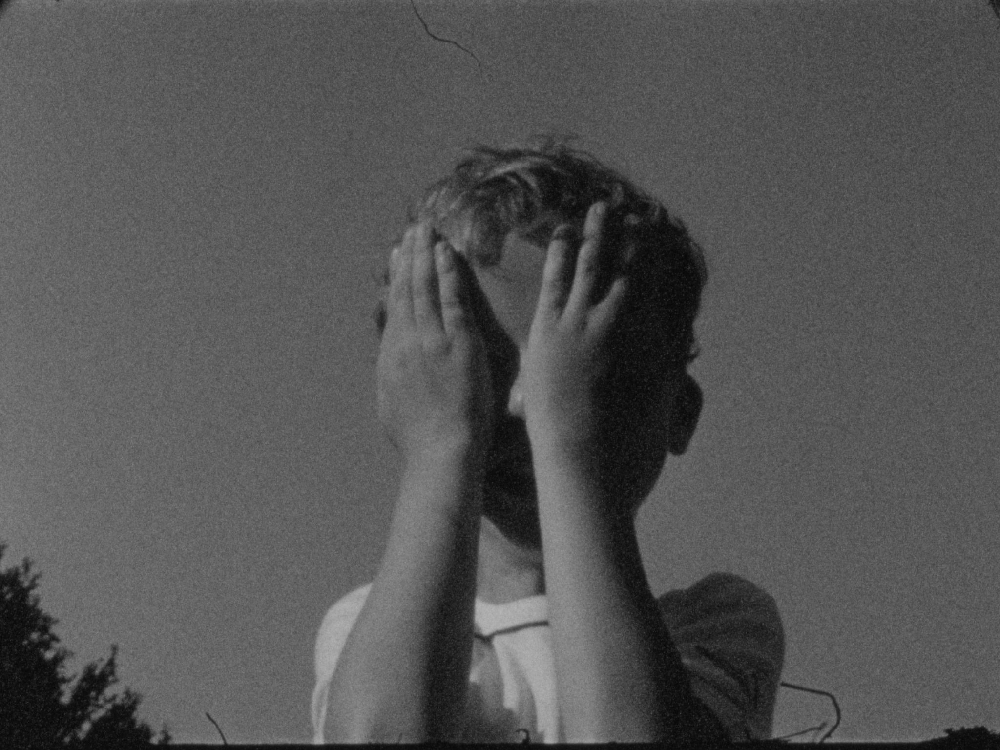
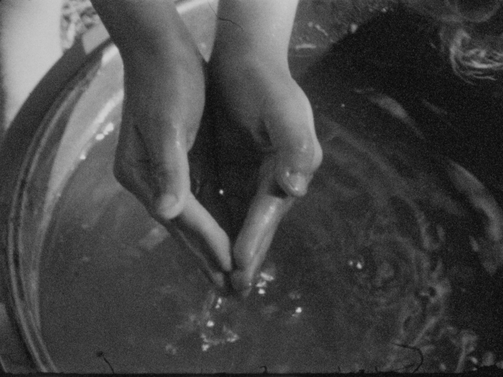

ALDO
On a quiet summer day in a small village surrounded by fields, young Aldo looks for a way out of his boredom. He leaves his home and immerses himself in his fantasy world, where nature and animals inspire him to a series of imaginative adventures.
Directed by
Astrid De Haes
Photography
Brecht Van Vliet
First Assistant Director
Maud Peeters
Cast
Aldo Bosmans
Music
Félicette (Sam De Bontridder-De Clercq)
Catering
Ivo Peeters and Cecile Dedoncker
Production company
Van Bree vzw
Special thanks to
BREEDBEELD